- Username:
- Password:
NUC/IBANCA/FTC Password Reset
A Complete Step by Step Guide - by Luis Quintanilla
Step 2
Choose a Roll
Student
faculty
Step 4
VERIFICATION REQUIRED!!!
Please collect the following from the student:
If the student fails to provide the correct information in one of theses items, then Proceed to Verification Phase 2
- 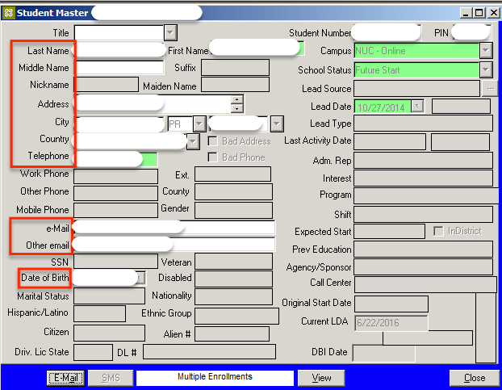
- 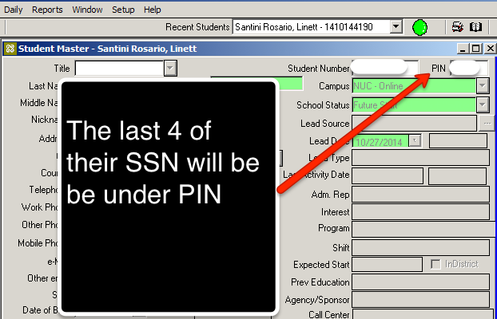
DO NOT PROCEED WITHOUT THE REQUIRED INFO
Step 3
System Access to Verify Personal Info
- Navigate to the website Netscaler Gateway. Credentails above ^ .Once authenticated you will see the following page. You will want to select Virtual
App and Desktop Access.
- 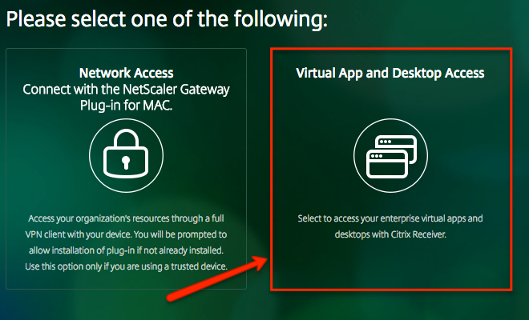
- You will then want to select the CampusNexus Student Icon. Upon clicking the icon you will need to authenticate
again with the same credentials as before. User name should already be populated, but you will need to
provide the password.
- 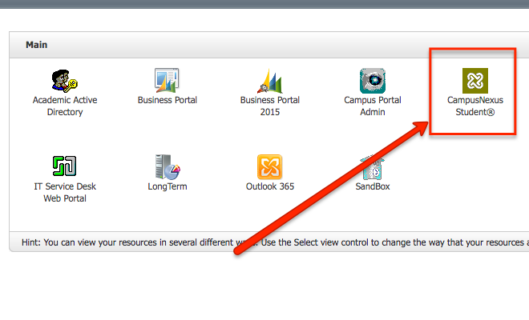
- You should then view the CampusNexus student page. You will want to select student under the "Find" menu.
- 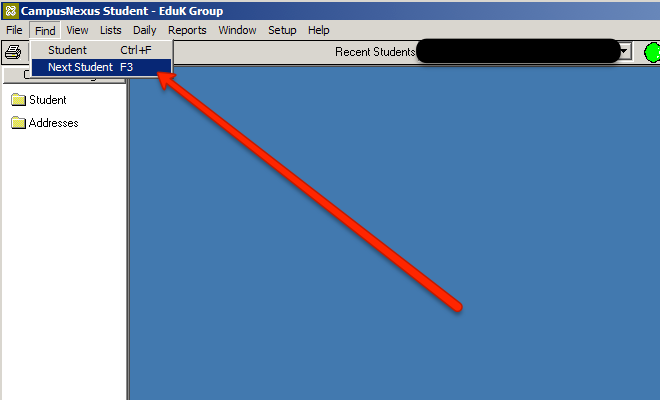
- From the "Campus" navigation drop down select "All Campuses in Database" for the directory of all students
or you can narrow your search by selecting their specific campus.
- 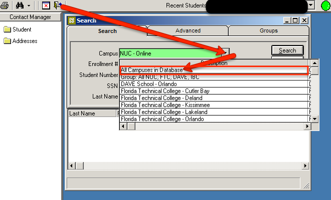
- Once the campus has been selected you can search for the user by entering in the Student ID, First Name and
both Last Names. When the correct user appears at the bottom, select it by double clicking on the name.
- 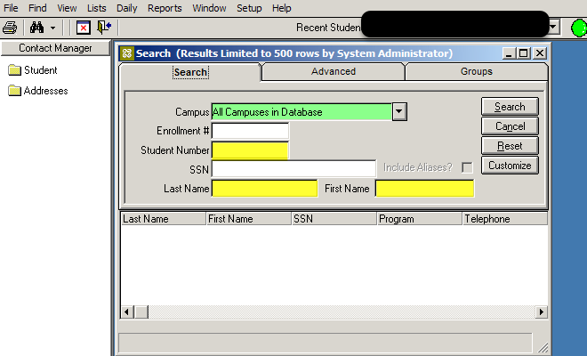
Step 5
Change Student's Password
- Navigate to the website Netscaler Gateway. Credentails above ^. Once authenticated, you will want to slect Virtual App and Desktop Access
- You will want to select the Academic Active Directory
- 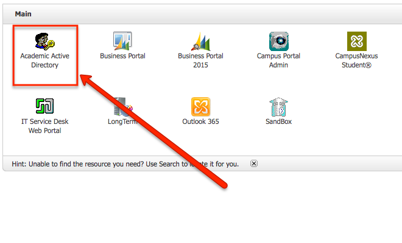
- Works best if you right click, then paste, rather than using CMD + V for the password ^.
- 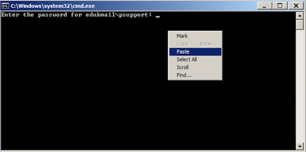
- If you ever receive this message after pasting the password in the MS-DOS window, click ok,
then close the Active Directory window and try again.
-
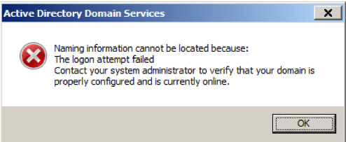
- If you ever receive this message after pasting the password in the MS-DOS window, click ok,
then close the Active Directory window and try again.
- 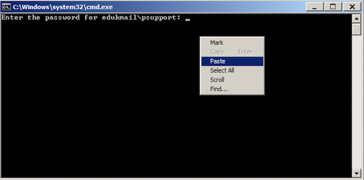
- Navigate to "Actions" > "Find", then select "edukmail.local"
- You can search by student number or name, but works best if you search it by the first part of their email before @stu... (e.g firstInitLastName01234)
- 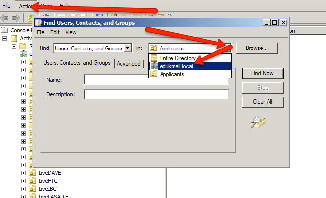
- The user will appear at the bottom if found. Right click in order to reset password for the user
- 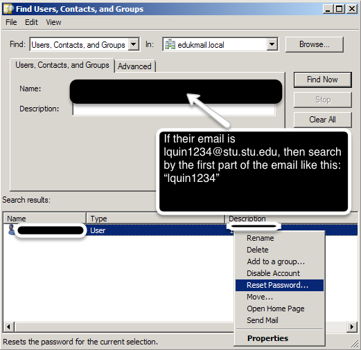
- Un-check the first option, then check select the second option as shown HERE:
- Password Reset Example: First letter from name + firs letter from last name + last 4 digits of student number. (fa4567)
- 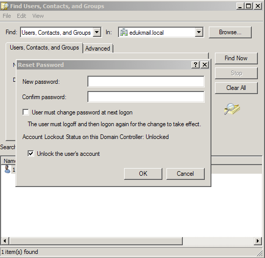
- Finally! Request the Student to provide his/her personal email to which the new password will be sent. Also,
update the student profile in CANVAS with the students personal email or instruct the student to do so
for future validations.
- You may also provide them with their password over the phone once verified (this instituion only!)
- If it's a ticket, or chat, you still need to validate their info, then send their passowrd to their personal, and school's email
- Do NOT provide password over a chat conversation. (Call or email only!)

Step 3
Validate old courses taught in Canvas for identification purposes
- Navigate to the website Netscaler Gateway. Credentails above ^ .Once authenticated you will see the following page. You will want to select Virtual
App and Desktop Access.